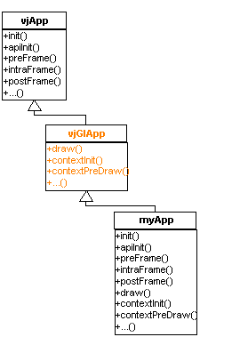
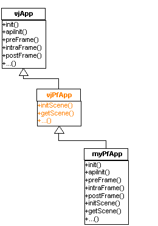

The application classes are extended for each of the specific draw managers. The graphics API specific application classes derive from vjApp and extend this interface further by add extra hooks that support the abilities of the graphics API.

The OpenGL application base class adds several functions to the interface that allow applications to render OpenGL graphics.
The draw function is called by the draw manager when it needs to draw the current scene in an OpenGL window. It is called for each OpenGL context.
The vjGlApp interface is discussed further in later sections.

The Performer application base class adds interface functions that are used to deal with Performer scene graphs.
The initScene function is called when the application should create the scene graph that it is going to use.
The getScene() function is called by the Performer draw manager when it needs to know what scene graph it should render for the application.
The vjPfApp interface is discussed further in later sections.